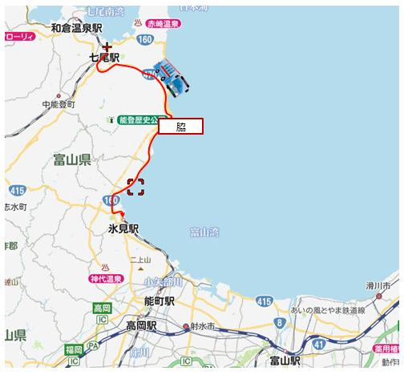

2020（R2）4月5～7日 富山 つながる､ひろがる
とうとう、あの富山駅の路面電車南北接続工事が完了して開業したとのことなので、様子を見に行きました。
もちろん、移動は青春１８切符。北陸方面は金沢ま
でしか乗れまへん・・・
久々に、北陸鉄道の浅野川線に乗ってみました。
駅は地下にあります。
終着の内灘駅。車庫もあります。
特におもむきもなく・・・
普通の駅っすね。
車庫をのぞいてきましたが、東京の地下鉄車両がお
りました。この元京王車両も引退なんかな。
ここからは素直に富山に向かわず、一度行ってみた
かったルートに向かいます
一旦能登半島へ。さきほど、青春１８は金沢まで、
と書きましたが、能登半島部分はまだ使えます。
そして、七尾からは能登半島の付け根の東側をバス
で富山県に入ります。
県境でバスは乗換えとなります。
脇のバス停で氷見行に乗換えます。

氷見からは氷見線に乗って高岡へ。まだ国鉄型が頑張
ってる！

翌日、早速駅前へ。
ん～、でけてる。高架の下をトラムが走っとるがな！
こんな時代が来るとは・・・
富山らしからぬ、しゃれたポスターやで。
今日はレンタサイクルを借りて、一日中、なつかし
い街を走り回ります。
まずは大学へ。大学前の電停にしゃれたトラムが停
まってます。
久々に、大学の中を自転車で走ります。ほぼ３０年
ぶりの感覚！
残念ながら建物はほとんど建て替わってて。この生
協のあたりの景色だけが昔のままでした。
大学近辺を走りまわったあと、富山城近くの松川べ
りの桜を見に行きました。ちょうど満開です。
このあと、「世界一美しいスタバ」でおなじみ？の
環水公園のスタバに行ってみました。が、いうほど
でもなかったと思う・・・
※ちなみに、その後福岡大濠公園店や太宰府天満宮
表参道店も同じ賞とったようで・・・
最終日、今日は県の東側に足を延ばします。
富山駅前。
ここだけ見たら、結構都会に見えるなぁ。
あいの風とやま鉄道に乗って、滑川へ。やっぱ富
山はこの景色っしょ。
地鉄に乗換え。
昭和な車内です。ええなぁ。
愛本駅に到着。ここからしばらく歩きます。
駅舎のまわりを歩いていたら、突然回送電車が！も
う少しでひかれるところやったわ。

いい感じの駅です。
黒部川を越えて、船見上町のバス停まで歩きました。
ここからコミュニティバスで入善へ。
入善駅前でレンタサイクルを借りて、にゅうぜんフラワーロードへ。
雪山・桜・チューリップ。見事でした。
俺が住んでるとき、こんなしゃれたイベントなかったけどなぁ。
入善駅に戻ってきました。
もうひとつの入善名物の杉沢の沢杉というところま
で頑張って行ってみたけど、時間切れで入口までし
か行かれへんかった・・・
富山駅まで戻ってきました。いよいよ帰路につきま
すが、市電に乗って大学経由で戻ります。
次来たときは、在学中にあった建物はもー無くなっ
てるんやろなぁ。
夜によく下宿からジョギングしたルートです。
うっすらと、立山連峰が見えますね。
高山線の西富山駅。ジョギングの折り返し地点でし
た。
富山に戻る時は、最終の雷鳥に乗って、高山線に乗
換えて、ここ西富山で下車して下宿まで歩いて戻っ
たなぁ。
ということで、昼間の西富山ってあんまり来たこと
なかってんけど。
高山本線経由で帰りま～す。